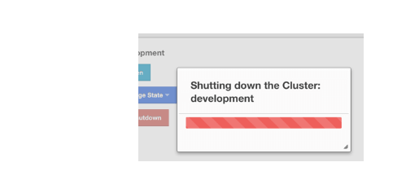
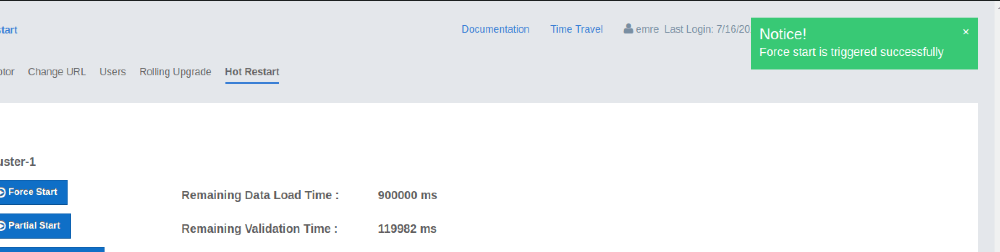

Cluster Administration
Using the "Administration" menu item, you can change the state of your cluster, shut down it, update your Management Center license and perform Rolling Upgrade or Hot Restart on your cluster.
When you click on the "Administration" menu item, the following page shows up:

| This menu item is available only to admin users. |
You can perform the aforementioned administrative tasks using the tabs on this page. Below sections explain each tab.
Cluster State
The admin user can see and change the cluster state and shut down the cluster using the buttons listed in this page as shown below.

Cluster States:
-
Active: The cluster continues to operate without any restriction. All operations are allowed. This is the default state of a cluster.
-
No Migration: Migrations (partition rebalancing) and backup replications are not allowed. The cluster continues to operate without any restriction. All other operations are allowed.
-
Frozen: New members are not allowed to join, except the members left in this or the Passive state. All other operations except migrations are allowed and the cluster operates without any restriction.
-
Passive: New members are not allowed to join, except the members left in this or the Frozen state. All operations, except the ones marked with
AllowedDuringPassiveState, are rejected immediately. -
In Transition: Shows that the cluster state is in transition. This is a temporary and intermediate state. It is not allowed to set it explicitly.
Changing the Cluster State

-
Click the dropdown menu and choose the state to which you want your cluster to change. A pop-up appears and stays on the screen until the state is successfully changed.

Shutting Down the Cluster
-
Click the Shutdown button. A pop-up appears and stays on the screen until the cluster is successfully shutdown.

If an exception occurs during the state change or shutdown operation on the cluster, this exception message is shown on the screen as a notification.
Rolling Upgrade
The admin user can upgrade the cluster version once all members of the cluster have been upgraded to the intended codebase version as described in the Rolling Upgrade Procedure section of the Hazelcast IMDG Reference Manual.
Open the Rolling Upgrade tab to perform a Rolling Upgrade and change the cluster’s version.

Enter the password of the cluster if security is enabled on the cluster (leave it empty if not), and click on the Change Version button.
Once the operation succeeds, you will see the following notification:

Hot Restart
Using the Hot Restart tab, you can perform force and partial start of the cluster and see the Hot Restart status of the cluster members. You can also take snapshots of the Hot Restart Store (Hot Backup). When you click on this tab, the following page is shown:

Below sections explain each operation.
Force Start
Restart process cannot be completed if a member crashes permanently and cannot recover from the failure since it cannot start or it fails to load its own data. In that case, you can force the cluster to clean its persisted data and make a fresh start. This process is called force start.
| See the Force Start section in the Hazelcast IMDG Reference Manual for more information on this operation. |
To perform a force start on the cluster, click on the Force Start button. A confirmation dialog appears as shown below.

Once you click on the Force Start button on this dialog, the cluster starts the force start process and the following progress dialog shows up while doing so.

This dialog stays on the screen until the operation is triggered. Once it is done, the success of force start operation is shown as a notice dialog, as shown below.

If an exception occurs, this exception message is shown on the screen as a notification.
Partial Start
When one or more members fail to start or have incorrect Hot Restart data (stale or corrupted data) or fail to load their Hot Restart data, the cluster becomes incomplete and the restart mechanism cannot proceed. One solution is to use Force Start and make a fresh start with the existing members, as explained above. Another solution is to do a partial start.
Partial start means that the cluster will start with an incomplete set of members. Data belonging to the missing members is assumed lost and the Management Center tries to recover the missing data using the restored backups. For example, if you have minimum two backups configured for all the maps and caches, then a partial start up to two missing members is safe against data loss. If there are more than two missing members or there are maps/caches with less than two backups, then data loss is expected.
| See the Partial Start section in the Hazelcast IMDG Reference Manual for more information on this operation and how to enable it. |
To perform a partial start on the cluster, click on the Partial Start button. A notice dialog appears as shown below.

You can also see two fields related to Partial Start operation: "Remaining Data Load Time" and "Remaining Validation Time", as shown in the above screenshot.
-
Remaining Validation Time: When partial start is enabled, Hazelcast can perform a partial start automatically or manually, in case of some members are unable to restart successfully. Partial start proceeds automatically when some members fail to start and join to the cluster in
validation-timeout-seconds, which you can configure. After this duration is passed, Hot Restart chooses to perform a partial start with the members present in the cluster. This field, i.e., "Remaining Validation Time" shows how much time is left to the automatic partial start, in seconds. You can always request a manual partial start, by clicking on the Partial Start button, before this duration passes. -
Remaining Data Load Time: The other situation to decide to perform a partial start is the failures during the data loading phase. When Hazelcast learns the data loading result of all members which have passed the validation step, it automatically performs a partial start with the ones which have successfully restored their Hot Restart data. Note that partial start does not expect every member to succeed in the data loading step. It completes the process when it learns the data loading result for every member and there is at least one member which has successfully restored its Hot Restart data. Relatedly, if it cannot learn the data loading result of all members before
data-load-timeout-secondsduration, it proceeds with the ones which have already completed the data loading process. This field, i.e., "Remaining Data Load Time" shows how much time (in seconds) is left for Hazelcast to know at least one member has successfully restored its Hot Restart data and perform an automatic partial start.
See the Configuring Hot Restart section
in the Hazelcast IMDG Reference Manual for more information on the configuration elements validation-timeout-seconds
and data-load-timeout-seconds mentioned above and how to configure them.
|
Force and partial start operations can also be performed using the REST
API and the script cluster.sh. See the
Using REST API for Cluster Management section
and Using the Script cluster.sh section
in the Hazelcast IMDG Reference Manual.
|
Hot Backup
During Hot Restart operations, you can take a snapshot of the Hot Restart data at a certain point in time. This is useful when you wish to bring up a new cluster with the same data or parts of the data. The new cluster can then be used to share load with the original cluster, to perform testing, quality assurance or reproduce an issue on the production data.
Note that you must first configure the Hot Backup directory programmatically
(using the method setBackupDir()) or declaratively (using the element backup-dir)
to be able to take a backup of the Hot Restart data. See the
Configuring Hot Backup section
in the Hazelcast IMDG Reference Manual.
If the backup directory is configured, you can start to perform the backup by clicking on the Hot Backup button. The Management Center first asks the cluster password as shown in the following dialog.

Once you entered the password correctly and click on the "Start" button on this dialog, you will see a notification dialog stating that the backup process starts. You can see the progress of the backup operation under the "Last Hot Backup Task Status" part of the page, as shown below.

Status Information
At the bottom of "Hot Restart" tab, you can see the Hot Restart and Hot Backup statuses of cluster members, as shown below.

You can see the status and progress of your Hot Backup operation under "Last Hot Backup Task Status". It can be IN_PROGRESS and SUCCESS/FAILURE according to the result of the operation.
You can also see the status of Hot Restart operation of your cluster members, under "Hot Restart Status". It can be PENDING and SUCCESSFUL/FAILED according to the result of Hot Restart operation.
CP Subsystem
| CP subsystem management operations require enabled REST API in the IMDG cluster. See the IMDG documentation for more information. |
The CP Subsystem tab can be used to monitor overall status of the CP subsystem in the current cluster and perform certain management operations.

Monitoring CP Subsystem
The Status field shows a summary of the current CP subsystem status. It may have one of the following values:
-
CP Subsystem is not supported by this cluster: Shown for IMDG clusters with version prior to 3.12.
-
CP Subsystem is not enabled: Shown if CP subsystem is not enabled for the current cluster.
-
All CP members are accessible: Shown if there are at least the same amount of accessible CP members as the configured CP member count.
-
CP Subsystem warning: one CP member is not accessible: Shown if there is one missing CP member and the minority count in the CP subsystem is greater than 1. For example, this value is shown when there are 6 accessible CP members and the configured count is 7. In this example, the minority count is 3 members and the majority count is 4 members.
-
CP Subsystem alert: multiple CP members are not accessible: Shown if there are multiple missing CP members, but their count is less than the minority.
-
CP Subsystem error: minority of the CP members are not accessible: Shown if the minority of CP members are missing.
-
CP Subsystem error: majority of the CP members are not accessible: Shown if the majority of CP members are missing.
The CP Members (Accessible/Configured) field shows the current count of accessible CP members and the configured CP members count.
| You may promote additional members or remove inaccessible CP members, so the total count of members that participate in the CP subsystem may be greater or less than the configured CP member count. As the Status field considers the configured CP member count as the total CP member count, it should be treated only as a basic health indicator for the CP subsystem. |
Managing CP Subsystem
You can also use the CP Subsystem tab to start the following management operations.
Promote Member to CP Subsystem
To promote one of the AP members to become a CP member, click on the Promote button. A confirmation dialog appears as shown below.

It asks you to choose one of AP members, i.e., one of the members that do not participate in the CP subsystem. Note that lite members are not shown in the dropdown list as lite members do not store data. Once you press the Promote button, the CP subsystem starts the promote operation for the given member.
Remove CP Member
To remove one of the inaccessible CP members from the CP subsystem, click on the Remove button. A confirmation dialog appears as shown below.

It asks you to choose one of the members that is not connected to the Management Center, but is known by the cluster’s CP subsystem. Once you press the Remove button, the CP subsystem starts the remote operation for the given member.
Restart CP Subsystem
To wipe and restart the whole CP subsystem of the cluster, click on the Restart button. A confirmation dialog appears as shown below.

Once you press the Restart button, CP subsystem proceeds with the restart operation.
| The CP subsystem restart operation is NOT idempotent and multiple invocations can break the whole system! After using this dialog, you must observe the system to see if the restart process is successfully completed or failed before starting this operation again. |